Algoritmos e Estruturas de dados
Unirios
Aula 07
Listas Encadeadas, Pilhas e Filas
O nó · a lista · LIFO · FIFO
Aula de implementação — uma única peça, o nó, e três formas de usá-la.
Camada 1
A caça ao tesouro
A primeira pista fica num lugar combinado. Cada pista diz apenas onde está a seguinte.
As pistas podem estar espalhadas pela casa, em qualquer ordem física — e ainda assim formam uma sequência.
Para chegar à quinta pista, não há atalho: é preciso passar pelas quatro primeiras.
Camada 2
Lista encadeada
Uma lista encadeada (linked list) é uma sequência de nós.
- Cada nó guarda um valor e a indicação de onde está o próximo nó.
- O primeiro nó é alcançado por uma referência externa: o início da lista.
- O último nó registra que não existe próximo.
Cormen et al. chamam a estrutura de lista ligada — Algoritmos: Teoria e Prática, cap. 10, seção 10.2.
Vetor e lista: a organização física
As duas estruturas guardam sequências. A diferença está em onde os elementos ficam na memória.
Vetor
Elementos em posições vizinhas. O elemento de índice i é localizado por um cálculo.
Lista encadeada
Nós em qualquer lugar. A ordem é dada pelas ligações. Cresce um nó de cada vez.
As quatro operações da lista
Toda operação sobre a lista começa pelo início e segue as ligações.
- Percorrer (traverse) — visitar os nós do primeiro ao último.
- Buscar (search) — encontrar o nó que contém um valor.
- Inserir (insert) — acrescentar um nó no início ou no fim.
- Remover (delete) — retirar um nó e religar os vizinhos.
Restringir o acesso
Duas estruturas muito usadas surgem quando se restringe onde a lista recebe e perde elementos.
Ambas são conjuntos dinâmicos: coleções que crescem e diminuem durante a execução do programa.
Nelas, quem sai não é escolhido por quem usa a estrutura. É predeterminado pela regra de acesso.

Turma, Cormen et al. definem pilhas e filas exatamente assim: conjuntos dinâmicos em que o elemento removido é predeterminado. Na pilha, sai o inserido mais recentemente. Na fila, sai o que está no conjunto há mais tempo. Cormen et al., Algoritmos: Teoria e Prática, cap. 10, seção 10.1
Pilha — LIFO
A pilha (stack) insere e remove sempre na mesma extremidade: o topo.
A política chama-se LIFO (Last-In, First-Out): o último a entrar é o primeiro a sair.
- empilhar (push) · desempilhar (pop)
- consultar o topo · vazia
Fila — FIFO
A fila (queue) insere no fim e remove no início, também chamado frente.
A política chama-se FIFO (First-In, First-Out): o primeiro a entrar é o primeiro a sair.
- enfileirar (enqueue) · desenfileirar (dequeue)
- consultar a frente · vazia
A restrição é deliberada
Pilha e fila não permitem ler o terceiro elemento, inserir no meio ou remover um elemento qualquer.
Limitar o acesso às extremidades faz cada operação custar um número fixo de passos — e a ordem de saída fica garantida pela própria estrutura.
Camada 3
Endereço e ponteiro
A memória é uma sequência de posições numeradas. O número de cada posição é o seu endereço.
Um ponteiro é uma variável que guarda um endereço: a indicação de onde o dado está.
int idade = 19;
int* ponteiro = &idade; /* & obtem o endereco de idade */
*ponteiro = 20; /* * acessa o conteudo no endereco: idade vale 20 */NULL: endereço nenhum
Um ponteiro precisa de um valor especial que indique a ausência de endereço.
Em C, esse valor é NULL. É ele que marca o fim de uma cadeia de nós.
No pseudocódigo de Cormen et al., o mesmo papel é feito pelo valor NIL.
O registro: struct
Um registro agrupa variáveis relacionadas, chamadas campos. O nó é um registro com dois campos.
typedef struct No {
int valor; /* o dado armazenado */
struct No* proximo; /* o endereco do no seguinte, ou NULL */
} No;O campo proximo aponta para um registro do mesmo tipo. Essa autorreferência permite encadear nós.
O operador ->
Com um ponteiro p para um nó, o operador -> alcança os campos do nó apontado.
p->valor /* o valor do no apontado por p */
p->proximo /* o endereco do no seguinte */typedef apenas dá o nome curto No ao tipo struct No.
Autorreferência: um endereço, não um nó
O campo proximo precisa ser um ponteiro. Um nó que contivesse outro nó inteiro teria tamanho infinito.
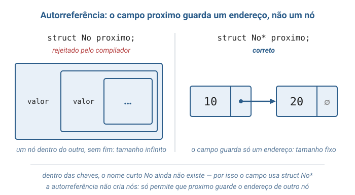
O nó na memória
Observe o campo proximo do nó 10: ele guarda um número — o endereço do nó 20.
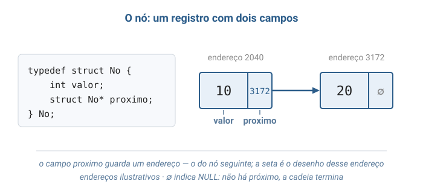
Alocação dinâmica: malloc e free
O número de nós só é conhecido durante a execução. Cada nó é reservado quando necessário e devolvido quando deixa de ser.
No* novo = malloc(sizeof(No)); /* reserva espaco para um no */
if (novo == NULL) { /* a reserva pode falhar */
printf("erro: memoria insuficiente\n");
exit(1);
}
free(novo); /* devolve o espaco */Ponteiro suspenso
Depois do free, o endereço não pode mais ser usado. Um ponteiro que ainda o guarda é um ponteiro suspenso (dangling pointer).
free(p);
printf("%d", p->valor); /* ERRADO: p aponta para memoria ja devolvida */O erro nem sempre se manifesta no momento em que ocorre. Por isso a ordem das linhas importa em toda remoção.
Ligar nós manualmente
Um nó recém-criado não está ligado a nada. A ligação é uma atribuição: copiar o endereço de um nó para o proximo de outro.
No* primeiro = criar_no(10);
No* segundo = criar_no(20);
No* terceiro = criar_no(30);
primeiro->proximo = segundo; /* o 10 passa a guardar o endereco do 20 */
segundo->proximo = terceiro; /* o 20 passa a guardar o endereco do 30 */criar_no reserva o nó com malloc e deixa proximo em NULL; ela aparece no programa completo.
A ligação, atribuição por atribuição
Acompanhe as três linhas da figura: nós soltos, depois uma ligação, depois a segunda. Ao final, os três formam uma cadeia.
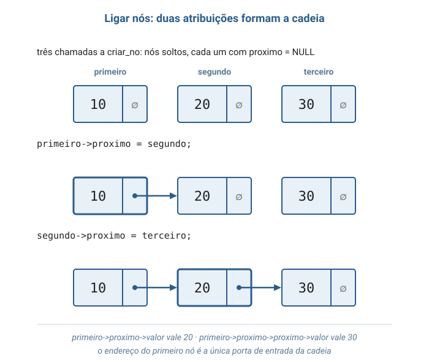
Seguir as ligações
Cada ->proximo avança um nó. A partir do primeiro, a cadeia inteira é alcançável.
primeiro->proximo->valor /* 20 */
primeiro->proximo->proximo->valor /* 30 */O endereço do primeiro nó é a única porta de entrada da cadeia. Perdido esse endereço, nenhum ponteiro leva mais aos nós.
A cadeia
Compare: no vetor, v[3] sai de um cálculo; na lista, o quarto nó só é alcançado passando pelos três primeiros.
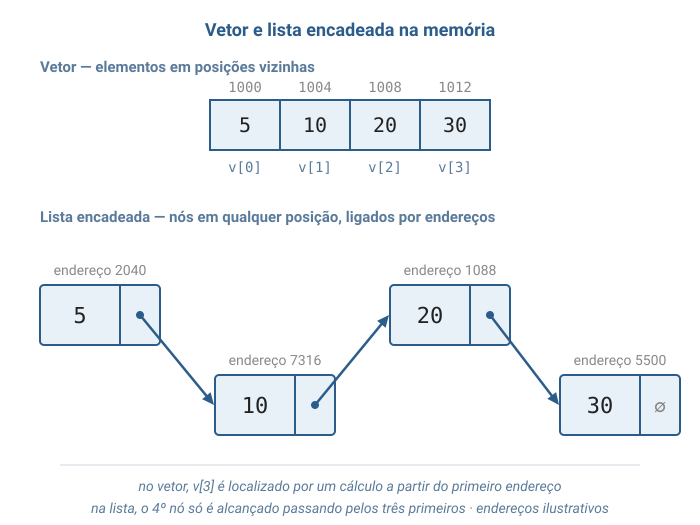
Um free para cada malloc
Cada nó foi reservado por um malloc próprio e precisa de um free próprio.
Liberar só o primeiro deixa os demais ocupando memória, sem nenhum ponteiro até eles: é um vazamento de memória (memory leak).
Num programa que executa por muito tempo, os vazamentos se acumulam até esgotar a memória.
Liberar a cadeia: guardar o seguinte primeiro
A liberação percorre a cadeia. O endereço do próximo nó é guardado antes do free, porque depois dele atual->proximo não pode mais ser lido.
void liberar_cadeia(No* primeiro) {
No* atual = primeiro;
while (atual != NULL) {
No* seguinte = atual->proximo; /* 1: guarda o endereco do proximo no */
free(atual); /* 2: devolve o no atual */
atual = seguinte; /* 3: avanca pelo endereco guardado */
}
}A liberação, volta a volta
Em cada volta, seguinte guarda o próximo nó, o atual é liberado e atual avança. Custo: O(n), um free por nó.
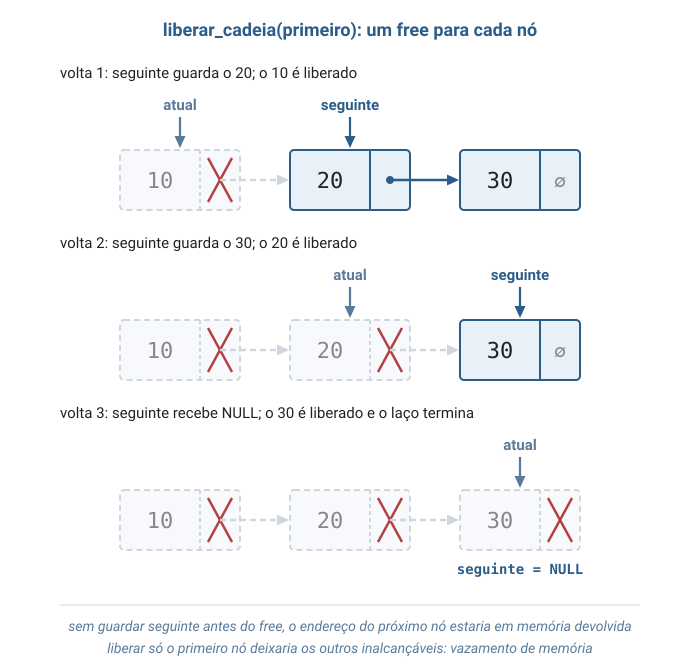
Os ponteiros externos
A cadeia só é alcançável por um ponteiro de fora dela. As três estruturas diferem exatamente nesse ponto.
- Lista — guarda
inicio, o primeiro nó. - Pilha — guarda
topo, que é o primeiro nó da cadeia. - Fila — guarda
inicioefim: sai pelo primeiro, entra depois do último.
Por que o topo fica no início da cadeia
No início da cadeia, inserir e remover custam um número fixo de passos.
No fim, remover exigiria achar o penúltimo nó — e ele só é alcançado percorrendo a cadeia inteira.
Pelo mesmo motivo, a fila remove pelo início e insere pelo fim — nunca o contrário.
Percorrer a lista
O ponteiro auxiliar atual começa no primeiro nó e avança pelo campo proximo até encontrar NULL.
No* atual = lista->inicio;
while (atual != NULL) {
printf("%d ", atual->valor);
atual = atual->proximo; /* avanca para o no seguinte */
}Custo: O(n) — lê-se "cresce no ritmo do número de nós".
Buscar: a ordem do teste importa
A busca é um percurso que para no primeiro nó com o valor procurado.
while (atual != NULL && atual->valor != valor) {
atual = atual->proximo;
}Primeiro se confirma que atual existe; só depois se lê atual->valor. O && para na primeira condição falsa.
Inserir no início: dois passos
Dois passos, nesta ordem. Invertida, o endereço do antigo primeiro se perderia — e toda a cadeia com ele.
novo->proximo = lista->inicio; /* 1: o novo aponta para o antigo primeiro */
lista->inicio = novo; /* 2: o novo passa a ser o primeiro */Funciona com a lista vazia: o novo nó recebe NULL. Custo: O(1), um número fixo de passos.
Inserir no fim sem o ponteiro fim
A lista só conhece o primeiro nó. Para achar o último, é preciso caminhar até o nó cujo proximo é NULL.
No* ultimo = lista->inicio;
while (ultimo->proximo != NULL) {
ultimo = ultimo->proximo;
}
ultimo->proximo = novo;A caminhada visita todos os nós: custo O(n).
Remover: dois ponteiros lado a lado
Para desligar um nó, é o campo proximo do nó anterior que precisa mudar.
Por isso a busca avança com dois ponteiros: anterior e atual, sempre vizinhos.
while (atual != NULL && atual->valor != valor) {
anterior = atual;
atual = atual->proximo;
}Remover: religar antes de liberar
Dois casos. O nó removido é o primeiro, ou está depois de algum outro.
if (anterior == NULL) {
lista->inicio = atual->proximo; /* era o primeiro: inicio avanca */
} else {
anterior->proximo = atual->proximo; /* o anterior pula o removido */
}
free(atual); /* so depois de religar */Custo: O(n), dominado pela busca. A religação em si é O(1).
Pilha: empilhar e desempilhar
As duas operações atuam no primeiro nó da cadeia, apontado por topo.
- Empilhar — os mesmos dois passos de inserir no início. O(1).
- Desempilhar — lê o valor do topo, faz
topodescer e libera o nó. O(1). - Vazia — testa
topo == NULL. O(1).
Desempilhar: a ordem do free
O topo desce antes da liberação. Na ordem inversa, topo se tornaria um ponteiro suspenso.
No* removido = pilha->topo;
int valor = removido->valor;
pilha->topo = removido->proximo; /* 1: o topo desce */
free(removido); /* 2: so entao o no e' liberado */Fila: enfileirar
O novo nó será o último, então nasce com proximo = NULL. Há dois casos.
- Fila vazia — o nó é o primeiro e o último:
inicioaponta para ele. - Fila com elementos — o antigo último se liga ao novo:
fim->proximo = novo.
Nos dois casos, fim passa a apontar para o novo nó. Custo: O(1).
Fila: o caso especial ao esvaziar
Desenfileirar faz inicio avançar. Se ele fica NULL, a fila esvaziou — e fim precisa acompanhar.
fila->inicio = removido->proximo;
if (fila->inicio == NULL) {
fila->fim = NULL; /* fim ainda apontava para o no que sera liberado */
}
free(removido);É o único caso especial da fila. Custo: O(1).
Invariantes
Uma invariante é uma propriedade que vale antes e depois de toda operação.
- Lista — vazia exatamente quando
inicioéNULL. - Pilha — vazia exatamente quando
topoéNULL. - Fila —
inicioefimsãoNULLao mesmo tempo, ou nenhum dos dois é.
A invariante da fila é a que a linha fila->fim = NULL protege.
Camada 4
TAD: o contrato da estrutura
Um TAD (Tipo Abstrato de Dados) define uma estrutura pelo que ela promete, não por como é construída.
- as operações que oferece;
- os axiomas — igualdades que essas operações sempre satisfazem.
A mesma pilha pode ser feita com vetor ou com lista encadeada. O contrato não muda.
Veloso & Pereira, capítulo de tipos abstratos de dados.
O contrato da pilha
Dois axiomas capturam a política LIFO. Primeiro em palavras, depois na forma curta.
- Logo depois de empilhar x, o topo é x: topo(empilhar(P, x)) = x
- Desempilhar desfaz o último empilhar: desempilhar(empilhar(P, x)) = P
O TAD completo, com os seis axiomas, está no material escrito da aula.
O contrato da fila
Na fila, quem chega não muda a frente — a não ser que a fila estivesse vazia.
- Fila vazia: depois de enfileirar x, a frente é x.
- Fila com elementos: frente(enfileirar(F, x)) = frente(F)
Lê-se: o recém-chegado espera a sua vez. Quem chegou antes sai antes.
O TAD completo da fila está no material escrito da aula.
Camada 5
O que O(1) e O(n) significam
A análise conta passos em função de n, o número de elementos armazenados.
- O(1) — um número fixo de passos, que não depende de n.
- O(n) — passos proporcionais a n: dobrar os elementos dobra o trabalho no pior caso.
Toscani & Veloso, Complexidade de Algoritmos; Cormen et al., cap. 10.
Vetor × lista: acessar e buscar
A lista perde o acesso direto por posição. Na busca por valor, as duas empatam.
| Operação | Vetor | Lista encadeada |
|---|---|---|
| Acessar a posição i | O(1) | O(n) |
| Buscar um valor | O(n) | O(n) |
Vetor × lista: inserir e remover
Nas extremidades, a lista não desloca nenhum elemento. O vetor precisa mover todos os elementos para abrir ou fechar espaço no início.
| Operação | Vetor | Lista encadeada |
|---|---|---|
| Inserir no início | O(n) | O(1) |
| Inserir no fim | O(1)* | O(n) sem fim · O(1) com fim |
| Remover do início | O(n) | O(1) |
* Enquanto houver espaço reservado. Esgotado o espaço, é preciso reservar um vetor maior e copiar tudo.
Pilha e fila: tudo em O(1)
Como pilha e fila só operam nas extremidades, todas as operações ficam em tempo constante.
| Operação | Pilha | Fila |
|---|---|---|
| Inserir | empilhar — O(1) | enfileirar — O(1) |
| Remover | desempilhar — O(1) | desenfileirar — O(1) |
| Consultar | topo — O(1) | frente — O(1) |
| Vazia | O(1) | O(1) |
O custo em memória
O tempo constante da lista tem um custo em espaço e em número de reservas de memória.
- Cada nó carrega um ponteiro além do valor — 8 bytes em computadores de 64 bits.
- Cada inserção faz uma chamada a
malloc; o vetor faz uma reserva só.
Cormen et al. implementam pilha e fila com vetores de capacidade fixa (seção 10.1). Aqui a cadeia dispensa essa capacidade.
Camada 6
Onde a pilha aparece
Sempre que o mais recente deve ser tratado primeiro, há uma pilha.
- Desfazer (Ctrl+Z) em editores.
- Botão voltar do navegador.
- Verificação de parênteses em compiladores e editores de código.
- Chamadas de função: a chamada mais recente termina primeiro.
Onde a fila e a lista aparecem
A fila atende por ordem de chegada; a lista permite inserir e remover em qualquer ponto.
- Fila de impressão e atendimento por senha.
- Teclas digitadas aguardando, em ordem, a leitura pelo programa.
- Listas de reprodução e carrinhos de compra — listas encadeadas.
Variantes da representação
A mesma ideia de nó admite outras formas, cada uma com uma vantagem.
- Duplamente encadeada — cada nó também aponta o anterior.
- Circular — o último aponta de volta para o primeiro.
- Com sentinela — um nó fictício elimina os casos especiais das extremidades.
- Fila dupla (deque) — insere e remove nas duas pontas.
A sentinela é apresentada por Cormen et al. na seção 10.2.
Bloco 2
Visualização
O mesmo programa do bloco de código, passo a passo: primeiro a lista, depois a pilha, depois a fila. O símbolo ∅ indica NULL.
Passo 1 — lista_criar()
A lista nasce sem nenhum nó. O único estado é o ponteiro inicio.
Passo 2 — lista_inserir_no_fim(lista, 10)
Com a lista vazia, o novo nó é o primeiro e o último ao mesmo tempo. Só inicio muda.
Passo 3 — lista_inserir_no_fim(lista, 20)
O auxiliar ultimo para no nó cujo proximo é NULL — aqui, o 10 — e o liga ao novo nó.
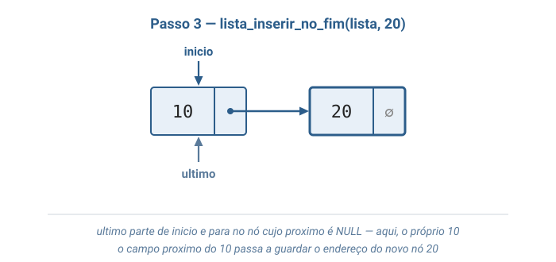
Passo 4 — lista_inserir_no_inicio(lista, 5)
Siga os números: primeiro o novo nó aponta para o 10; só depois inicio aponta para o novo nó.
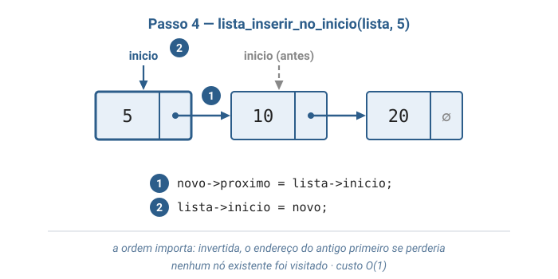
Passo 5 — lista_inserir_no_fim(lista, 30)
Agora a caminhada aparece: ultimo visita 5, 10 e 20 antes de ligar o 20 ao 30.
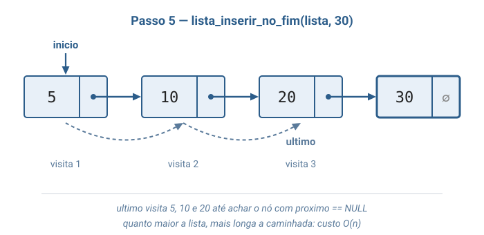
Passo 6 — lista_buscar(lista, 20)
Três comparações até o valor aparecer. A busca só lê: nenhum ponteiro da lista muda.
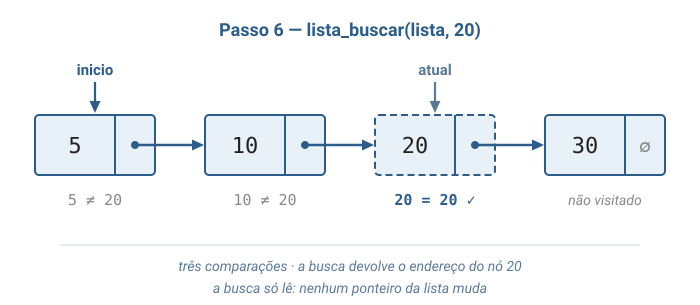
Uma busca por 99 visitaria os quatro nós e devolveria NULL.
Passo 7 — lista_remover(lista, 20)
O 10, apontado por anterior, passa a apontar para o 30. Só então o 20 é liberado.
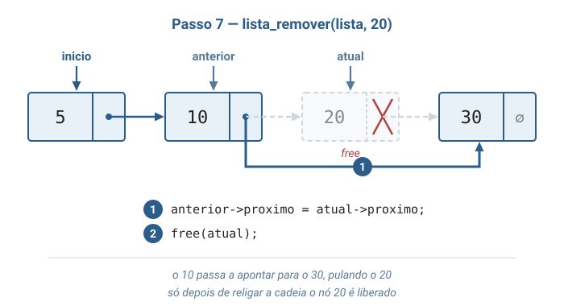
Passo 8 — lista_remover(lista, 5)
O valor está no primeiro nó e anterior é NULL. Quem avança é o próprio inicio.
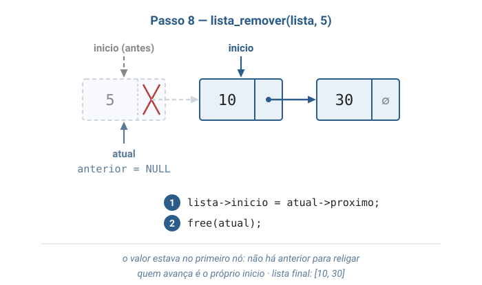
Passo 9 — pilha_empilhar(pilha, 30)
A cadeia está na vertical, com o topo em cima. São os mesmos dois passos de inserir no início.
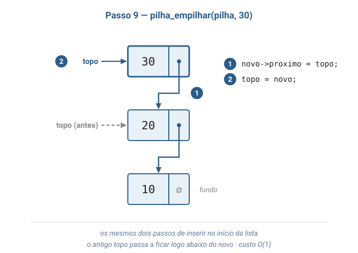
Passo 10 — pilha_desempilhar(pilha)
O 30 é devolvido. O topo desce para o 20 antes do free.
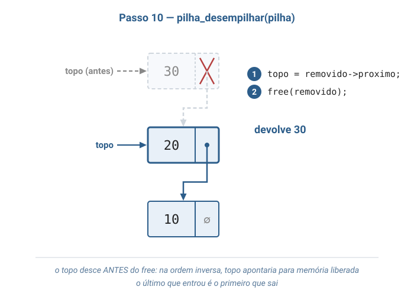
Passo 11 — fila_enfileirar(fila, 30)
O antigo último se liga ao novo nó, e fim avança. Nenhum nó foi percorrido.
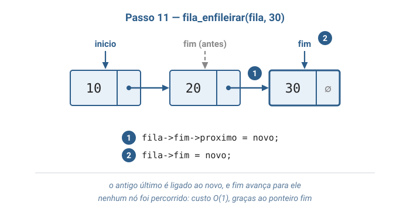
Passo 12 — fila_desenfileirar(fila)
Sai o 10, o primeiro que entrou. O ponteiro fim não muda: ainda há elementos.
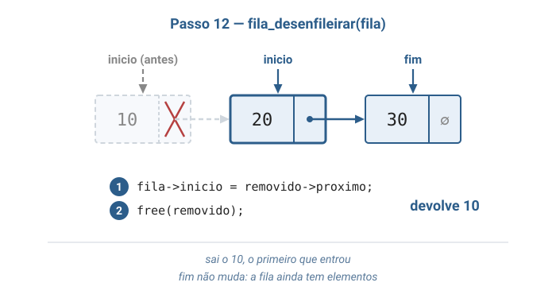
Passo 13 — fila_desenfileirar(fila) — o último elemento
Depois de sair o 20, resta só o 30. Ao removê-lo, inicio e fim precisam passar a valer NULL.
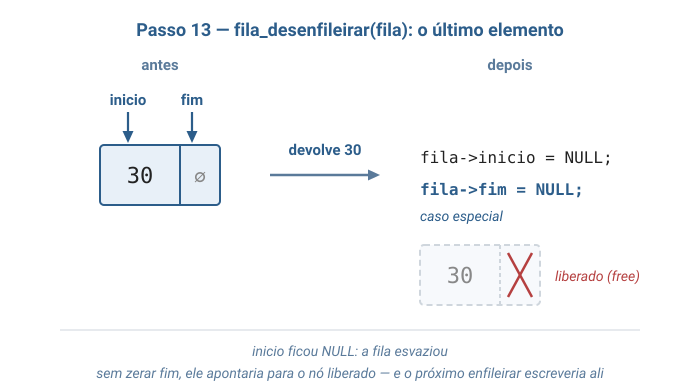
Passo 14 — esvaziar a pilha e a fila
A mesma entrada — 10, 20, 30 — produz saídas opostas nas duas estruturas.
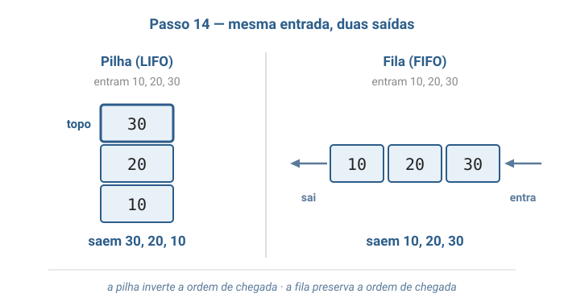
É exatamente o que o programa do bloco de código imprime.
Bloco 3
Problema motivador
Como um editor de texto sabe o que desfazer, uma alteração de cada vez, quando você pressiona Ctrl+Z repetidas vezes?
Desfazer é LIFO
O editor registra cada alteração. O primeiro Ctrl+Z desfaz a mais recente; o segundo, a anterior a ela.
A ordem de desfazer é o inverso da ordem de fazer. Cada alteração é empilhada; cada Ctrl+Z desempilha.
Por que uma cadeia de nós
O editor não sabe quantas alterações a pessoa fará: dez ou dez mil.
- Um vetor exigiria um limite, ou copiar tudo para um vetor maior ao atingi-lo.
- A cadeia cresce um nó por alteração, com empilhar e desempilhar em O(1).
A impressora compartilhada é FIFO
Documentos chegam em momentos imprevisíveis e devem sair por ordem de chegada.
Cada documento é enfileirado no fim. Ao terminar um trabalho, a impressora desenfileira o da frente.
Nenhum documento é impresso antes de outro enviado mais cedo.
A estrutura garante a ordem
Nos dois casos, quem usa a estrutura não precisa procurar nada.
- O editor não procura "qual foi a última alteração".
- A impressora não compara horários de envio.
A regra de acesso da pilha e da fila faz esse trabalho.
Turma, o botão voltar do navegador usa a mesma ideia do Ctrl+Z. Cada página visitada é empilhada; voltar desempilha a página atual e mostra a que ficou no topo. Reparem: a página mais recente é sempre a primeira a sair.
Bloco 4
Código em C
Um único arquivo: listas_pilhas_filas.c
O programa inteiro cabe num arquivo, lido de cima a baixo.
Primeiro o nó e duas funções compartilhadas; depois a lista, a pilha e a fila; por fim, a main() demonstrativa.
Mapa das funções
Cada operação estudada tem uma função própria no arquivo.
| Estrutura | Funções | Custo |
|---|---|---|
| Lista | lista_inserir_no_inicio | O(1) |
| Lista | lista_inserir_no_fim · lista_buscar · lista_remover | O(n) |
| Pilha | pilha_empilhar · pilha_desempilhar · pilha_consultar_topo | O(1) |
| Fila | fila_enfileirar · fila_desenfileirar · fila_consultar_frente | O(1) |
O nó e criar_no
criar_no concentra o malloc e o tratamento de falha. As três estruturas a usam.
// Cada no guarda um valor e o endereco do no seguinte.
// O campo proximo e' um ponteiro para outro No: e' ele que encadeia os nos.
typedef struct No {
int valor;
struct No* proximo;
} No;
// Reserva memoria para um novo no, ainda desligado de qualquer outro.
No* criar_no(int valor) {
No* novo = malloc(sizeof(No));
if (novo == NULL) {
printf("erro: memoria insuficiente\n");
exit(1);
}
novo->valor = valor;
novo->proximo = NULL;
return novo;
}liberar_cadeia
Os três destruir chamam esta função. Repare onde o endereço do seguinte é guardado.
// Devolve ao sistema a memoria de todos os nos, do primeiro ate o fim da cadeia.
void liberar_cadeia(No* primeiro) {
No* atual = primeiro;
while (atual != NULL) {
// Guardamos o endereco do seguinte ANTES do free: depois dele,
// o campo atual->proximo nao pode mais ser lido.
No* seguinte = atual->proximo;
free(atual);
atual = seguinte;
}
}A lista: registro e criação
A lista guarda só o primeiro nó. Criar a lista é pôr NULL em inicio.
// A lista conhece apenas o endereco do primeiro no; o resto se alcanca
// seguindo os campos proximo.
typedef struct Lista {
No* inicio;
} Lista;
// Cria uma lista vazia: inicio NULL significa "nenhum no".
Lista* lista_criar(void) {
Lista* lista = malloc(sizeof(Lista));
if (lista == NULL) {
printf("erro: memoria insuficiente\n");
exit(1);
}
lista->inicio = NULL;
return lista;
}lista_inserir_no_inicio
Os dois passos numerados do diagrama, exatamente nesta ordem.
// Verdadeiro (1) se a lista nao tem nenhum no.
int lista_vazia(Lista* lista) {
return lista->inicio == NULL;
}
// Insere um valor antes do primeiro no. Custo O(1): nao depende do tamanho.
void lista_inserir_no_inicio(Lista* lista, int valor) {
No* novo = criar_no(valor);
// Passo 1: o novo no aponta para quem era o primeiro (NULL se a lista
// estava vazia — por isso este caso nao precisa de tratamento especial).
novo->proximo = lista->inicio;
// Passo 2: o novo no passa a ser o primeiro.
lista->inicio = novo;
}lista_inserir_no_fim
O caso da lista vazia encerra a função logo no início. O outro caso caminha até o último nó.
// Insere um valor depois do ultimo no. Custo O(n): e' preciso caminhar ate o fim.
void lista_inserir_no_fim(Lista* lista, int valor) {
No* novo = criar_no(valor);
if (lista_vazia(lista)) {
// Sem nenhum no, o novo e' ao mesmo tempo o primeiro e o ultimo.
lista->inicio = novo;
return;
}
// A lista so guarda o primeiro no. Para achar o ultimo, caminhamos
// ate encontrar o no cujo proximo e' NULL.
No* ultimo = lista->inicio;
while (ultimo->proximo != NULL) {
ultimo = ultimo->proximo;
}
ultimo->proximo = novo;
}lista_buscar
Um percurso que para cedo. Devolve o endereço do nó encontrado, ou NULL.
// Devolve o endereco do primeiro no com o valor procurado, ou NULL se nao houver.
No* lista_buscar(Lista* lista, int valor) {
No* atual = lista->inicio;
// A ordem das condicoes importa: primeiro confirmamos que atual existe,
// so depois lemos atual->valor. O && para na primeira condicao falsa.
while (atual != NULL && atual->valor != valor) {
atual = atual->proximo;
}
return atual;
}lista_remover: a busca
A função mais longa do arquivo. A primeira parte é a busca com os dois ponteiros vizinhos.
int lista_remover(Lista* lista, int valor) {
// Caminhamos com dois ponteiros lado a lado: para desligar atual da
// cadeia, e' o campo proximo do no ANTERIOR que precisa mudar.
No* anterior = NULL;
No* atual = lista->inicio;
while (atual != NULL && atual->valor != valor) {
anterior = atual;
atual = atual->proximo;
}
...lista_remover: religar e liberar
A segunda parte decide entre os três desfechos: valor ausente, primeiro nó ou nó depois de outro.
...
if (atual == NULL) {
return 0; // percorremos a lista inteira sem encontrar o valor
}
if (anterior == NULL) {
// O no removido era o primeiro: quem muda e' o ponteiro inicio.
lista->inicio = atual->proximo;
} else {
// O anterior "pula" o no removido e passa a apontar para o seguinte.
anterior->proximo = atual->proximo;
}
// So liberamos depois de religar a cadeia: nenhum ponteiro da lista
// aponta mais para este no.
free(atual);
return 1;
}lista_imprimir e lista_destruir
Mais um percurso, agora para mostrar os valores. Destruir delega a liberar_cadeia.
// Mostra os valores do primeiro ao ultimo no, no formato [5, 10, 30].
void lista_imprimir(Lista* lista) {
printf("[");
No* atual = lista->inicio;
while (atual != NULL) {
printf("%d", atual->valor);
if (atual->proximo != NULL) {
printf(", ");
}
atual = atual->proximo;
}
printf("]\n");
}
void lista_destruir(Lista* lista) {
liberar_cadeia(lista->inicio);
free(lista);
}A pilha: registro e pilha_empilhar
Um só ponteiro, topo. Empilhar repete os passos de inserir no início.
// Toda operacao da pilha acontece numa unica ponta da cadeia, o topo.
// Por isso basta um ponteiro, que faz o papel do inicio da lista.
typedef struct Pilha {
No* topo;
} Pilha;
// Coloca um valor no topo. Sao os mesmos dois passos de inserir no inicio da lista.
void pilha_empilhar(Pilha* pilha, int valor) {
No* novo = criar_no(valor);
novo->proximo = pilha->topo; // o novo no fica "em cima" do antigo topo
pilha->topo = novo; // e passa a ser o topo
}pilha_desempilhar
A pré-condição é verificada antes de tudo. Depois, o topo desce e só então o nó é liberado.
int pilha_desempilhar(Pilha* pilha) {
if (pilha_vazia(pilha)) {
printf("erro: pilha vazia\n");
exit(1);
}
No* removido = pilha->topo;
int valor = removido->valor;
// Primeiro o topo desce para o no de baixo; so depois liberamos o removido.
// Na ordem inversa, topo ficaria apontando para memoria ja devolvida.
pilha->topo = removido->proximo;
free(removido);
return valor;
}A fila: registro e fila_enfileirar
Dois ponteiros externos. Enfileirar trata a fila vazia e a fila com elementos.
// A fila usa as duas pontas da cadeia: sai pelo inicio e entra pelo fim.
// Guardar o fim evita percorrer a cadeia inteira a cada insercao.
typedef struct Fila {
No* inicio; // o proximo elemento a sair
No* fim; // o ultimo elemento que entrou
} Fila;
void fila_enfileirar(Fila* fila, int valor) {
No* novo = criar_no(valor);
if (fila_vazia(fila)) {
// O unico no da fila e' ao mesmo tempo o primeiro e o ultimo.
fila->inicio = novo;
} else {
// O antigo ultimo passa a apontar para o novo no.
fila->fim->proximo = novo;
}
fila->fim = novo;
}fila_desenfileirar
Procure a linha que só executa quando a fila esvazia.
int fila_desenfileirar(Fila* fila) {
if (fila_vazia(fila)) {
printf("erro: fila vazia\n");
exit(1);
}
No* removido = fila->inicio;
int valor = removido->valor;
fila->inicio = removido->proximo; // o segundo da fila passa a ser o primeiro
if (fila->inicio == NULL) {
// A fila esvaziou. O fim ainda aponta para o no que vamos liberar;
// se nao virar NULL, o proximo enfileirar escreveria em memoria devolvida.
fila->fim = NULL;
}
free(removido);
return valor;
}
Turma, apaguem a linha fila->fim = NULL e executem o programa: a saída continua idêntica.
O defeito só aparece se alguém enfileirar depois que a fila esvaziou — nesse caso, o programa escreve
num nó que já foi liberado. Erros de ponteiro raramente se manifestam no momento em que são cometidos.
main: montar a lista
Três inserções no fim e uma no início produzem [5, 10, 20, 30].
printf("== Lista encadeada ==\n");
Lista* lista = lista_criar();
lista_inserir_no_fim(lista, 10);
lista_inserir_no_fim(lista, 20);
lista_inserir_no_inicio(lista, 5);
lista_inserir_no_fim(lista, 30);
printf("Lista montada: ");
lista_imprimir(lista);main: buscar e remover
Uma busca que encontra, outra que não encontra, e os dois casos de remoção.
if (lista_buscar(lista, 20) != NULL) {
printf("Buscar 20: encontrado\n");
} else {
printf("Buscar 20: nao encontrado\n");
}
if (lista_buscar(lista, 99) != NULL) {
printf("Buscar 99: encontrado\n");
} else {
printf("Buscar 99: nao encontrado\n");
}
lista_remover(lista, 20);
printf("Depois de remover 20: ");
lista_imprimir(lista);
lista_remover(lista, 5);
printf("Depois de remover 5: ");
lista_imprimir(lista);
lista_destruir(lista);main: a pilha
Empilha 10, 20 e 30, consulta o topo e desempilha até esvaziar.
printf("\n== Pilha (LIFO) ==\n");
Pilha* pilha = pilha_criar();
pilha_empilhar(pilha, 10);
pilha_empilhar(pilha, 20);
pilha_empilhar(pilha, 30);
printf("Topo: %d\n", pilha_consultar_topo(pilha));
printf("Desempilhando:");
while (!pilha_vazia(pilha)) {
printf(" %d", pilha_desempilhar(pilha));
}
printf("\n");
pilha_destruir(pilha);main: a fila
Os mesmos valores, agora numa fila. Só a estrutura mudou.
printf("\n== Fila (FIFO) ==\n");
Fila* fila = fila_criar();
fila_enfileirar(fila, 10);
fila_enfileirar(fila, 20);
fila_enfileirar(fila, 30);
printf("Frente: %d\n", fila_consultar_frente(fila));
printf("Desenfileirando:");
while (!fila_vazia(fila)) {
printf(" %d", fila_desenfileirar(fila));
}
printf("\n");
fila_destruir(fila);Compilação e execução
Um arquivo só: a compilação é um único comando. As opções -Wall -Wextra pedem todos os avisos.
gcc -Wall -Wextra -o listas_pilhas_filas listas_pilhas_filas.c
./listas_pilhas_filasA saída esperada
Compare a última linha da pilha com a última linha da fila.
== Lista encadeada ==
Lista montada: [5, 10, 20, 30]
Buscar 20: encontrado
Buscar 99: nao encontrado
Depois de remover 20: [5, 10, 30]
Depois de remover 5: [10, 30]
== Pilha (LIFO) ==
Topo: 30
Desempilhando: 30 20 10
== Fila (FIFO) ==
Frente: 10
Desenfileirando: 10 20 30A saída prova as políticas
A saída é a prova empírica das duas regras de acesso.
- Pilha — entram 10, 20, 30; saem 30, 20, 10. LIFO.
- Fila — entram 10, 20, 30; saem 10, 20, 30. FIFO.
- Lista — o 5 entrou por último, mas ficou na frente: foi inserido no início.
Referências
- Cormen, T. H.; Leiserson, C. E.; Rivest, R. L.; Stein, C. — Algoritmos: Teoria e Prática. Cap. 10, Estruturas de dados elementares: seção 10.1 (pilhas e filas) e seção 10.2 (listas ligadas e sentinelas).
- Backes, A. R. — Algoritmos e Estruturas de Dados em Linguagem C. LTC, 2023. Capítulos de listas, pilhas e filas.
- Veloso, P.; Pereira, S. do L. — Estruturas de Dados em C — Uma Abordagem Didática. Saraiva, 2016. Tipos abstratos de dados e listas.
- Toscani, L. V.; Veloso, P. A. S. — Complexidade de Algoritmos. Bookman, 2012. A notação O(·).
- Schildt, H. — C Completo e Total. Makron Books, 1997. Ponteiros, estruturas e alocação dinâmica.
Leituras complementares:
- Wirth — Algoritmos e Estruturas de Dados — estruturas de dados dinâmicas.
- Damas — Linguagem C — ponteiros e estruturas em profundidade.
- Forouzan & Gilbert — Data Structures: a pseudocode approach with C++ — contraste em pseudocódigo.
Fim — Listas, Pilhas e Filas
Perguntas
Uma peça — o nó —, ponteiros externos mantidos consistentes e duas regras de acesso: LIFO e FIFO.